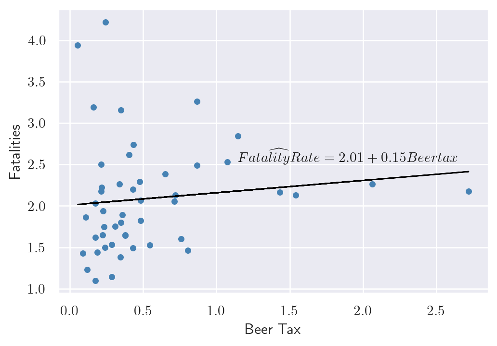
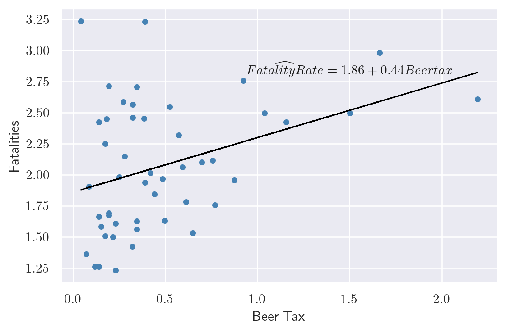

import numpy as np
import pandas as pd
from linearmodels import PanelOLS
from linearmodels import PooledOLS
from linearmodels import RandomEffects
import statsmodels.formula.api as smf
import matplotlib.pyplot as plt
plt.rc('text', usetex = True)
import seaborn as sns
from stargazer.stargazer import Stargazer19 Regression with Panel Data
19.1 Panel data
We assume that we have a dataset that contains observations on a set of entities over multiple time periods. The entities can be individuals, firms, industries, or countries, and the time periods can be days, months, quarters, or years.
Definition 19.1 (Panel data) Panel data (longitudinal data) contain observations on a set of entities over multiple time periods.
If we observe all entities in every time period, we call the panel a balanced panel, i.e., we have observations on all entities over the entire sample period. On the other hand, if we have missing observations on some entities at certain time periods, we call the panel an unbalanced panel or an incomplete panel.
Panel data with many entities but only a few time periods are referred to as short panels. Conversely, panel data with many time periods but only a few entities are called long panels. When panel data include both a large number of entities and a large number of time periods, they are referred to as large panels.
In this chapter, we study commonly used panel data models. These models have features that differ from the cross-sectional and time series models. The key features of panel data models are as follows:
- Panel data models can exploit the variation across entities and over time, which can lead to more efficient estimators.
- Panel data models allow controlling for unobserved factors that vary across entities but do not vary over time.
- Panel data models allow controlling for unobserved factors that vary across time but do not vary over entities.
- Panel data models can be used to study the dynamics of economic relationships over time.
We assume that there are \(n\) entities and \(T\) time periods. Let \(i\) and \(t\) to denote entities and time periods, respectively. Suppose we have an outcome variable and \(k\) explanatory variables in the dataset. Then, our dataset consists of the realizations of \[ \begin{align} (X_{1it},\,X_{2it},\dots,X_{kit},\,Y_{it}),\quad i=1,2,\dots,n,\quad t=1,2,\dots,T. \end{align} \]
19.1.1 Example: Traffic deaths and alcohol taxes
We analyze the traffic fatality dataset (fatality.csv) provided by Stock and Watson (2020). This dataset covers annual observations for the lower 48 states (excluding Alaska and Hawaii) over the period 1982 to 1988. Consequently, the panel consists of \(n = 48\) entities and \(T = 7\) time periods, yielding a total of \(n \times T = 336\) observations. The main variables are described in the following list.
state: state id (FIPS) codeyear: yearmrall: per capita vehicle fatality (number of traffic deaths)beertax: the real tax on a case of beermlda: minimum legal drinking agejaild: a dummy variable that equals to 1 if state requires mandatory jail sentence for an initial drunk driving conviction, 0 otherwisecomserd: a dummy variable that equals 1 if state requires mandatory community service for an initial drunk driving conviction, 0 otherwisevmiles: total vehicle miles traveled annuallyunrate: unemployment rateperinc: per capita personal income
We will first change the measurement of the per capita vehicle fatality to vehicle fatality per 10,000 people.
# Load the data
fatality = pd.read_csv('data/fatality.csv', header = 0)
# Change the measurement of the per capita vehicle fatality
fatality['mrall'] = 1e4*fatality['mrall']
# Column names
fatality.columnsIndex(['state', 'year', 'spircons', 'unrate', 'perinc', 'emppop', 'beertax',
'sobapt', 'mormon', 'mlda', 'dry', 'yngdrv', 'vmiles', 'breath',
'jaild', 'comserd', 'allmort', 'mrall', 'allnite', 'mralln', 'allsvn',
'a1517', 'mra1517', 'a1517n', 'mra1517n', 'a1820', 'a1820n', 'mra1820',
'mra1820n', 'a2124', 'mra2124', 'a2124n', 'mra2124n', 'aidall',
'mraidall', 'pop', 'pop1517', 'pop1820', 'pop2124', 'miles', 'unus',
'epopus', 'gspch'],
dtype='object')The summary statistics for some of the variables are presented in Table 19.1. The average fatality rate (mrall) is roughly 2 per 10,000 people. The average real beer tax (beertax) is about $0.50 per case (in 1988 dollars). The sample means of jaild and comserd are 0.28 and 0.39, respectively, indicating that 28 percent of the states require mandatory jail sentence for an initial drunk driving conviction, while 39 percent mandate community service. The average annual vehicle miles (vmiles) traveled is about 7890 miles. Lastly, the average unemployment rate across states is 7.35 percent.
# Descriptive statistics
fatality[["mrall","beertax","jaild","comserd","vmiles","unrate"]].describe().round(2).T| count | mean | std | min | 25% | 50% | 75% | max | |
|---|---|---|---|---|---|---|---|---|
| mrall | 336.0 | 2.04 | 0.57 | 0.82 | 1.62 | 1.96 | 2.42 | 4.22 |
| beertax | 336.0 | 0.51 | 0.48 | 0.04 | 0.21 | 0.35 | 0.65 | 2.72 |
| jaild | 335.0 | 0.28 | 0.45 | 0.00 | 0.00 | 0.00 | 1.00 | 1.00 |
| comserd | 335.0 | 0.19 | 0.39 | 0.00 | 0.00 | 0.00 | 0.00 | 1.00 |
| vmiles | 336.0 | 7890.75 | 1475.66 | 4576.35 | 7182.54 | 7796.22 | 8504.02 | 26148.27 |
| unrate | 336.0 | 7.35 | 2.53 | 2.40 | 5.48 | 7.00 | 8.90 | 18.00 |
Consider first the linear relationship between vehicle fatalities and the real tax on a case of beer, in 1982, and, in 1988. In the following code, we estimate the following simple linear regression model for 1982 and 1988 separately: \[ \text{FatalityRate}_{it} = \beta_0 + \beta_1 \text{BeerTax}_{it} + u_{it}, \]
where \(\text{FatalityRate}_{it}\) is the vehicle fatality rate in state \(i\) in year \(t\), and \(\text{BeerTax}_{it}\) is the real tax on a case of beer in state \(i\) in year \(t\).
# Data for 1982
df_1982 = fatality[fatality['year'] == 1982]
res_1982 = smf.ols(formula='mrall ~ beertax', data=df_1982).fit().params
# Data for 1988
df_1988 = fatality[fatality['year'] == 1988]
res_1988 = smf.ols(formula='mrall ~ beertax', data=df_1988).fit().paramsThe estimated coefficients for the relationship between the real beer tax and vehicle fatalities in 1982 and 1988 are presented in Figure 19.1, along with the scatter plots. The estimated coefficient on the real beer tax is 0.15 in 1982 and 0.44 in 1988. These results suggest a positive relationship between alcohol taxes and vehicle fatalities, which is contrary to what we would expect. Alcohol taxes are typically expected to lower the rate of traffic fatalities. This discrepancy may be due to omitted variable bias, as neither model includes factors such as vehicle quality, road quality, drinking and driving culture, car density, or the number of rainy or snowy days. Because of these omitted variables, the results are biased.
# Relationship between beer tax and fatal accidents
# Relationship in 1982
sns.set(style='darkgrid')
fig, axs = plt.subplots(figsize = (6, 4))
axs.scatter(df_1982.beertax, df_1982.mrall, color='steelblue', s=15)
axs.plot(df_1982['beertax'], res_1982[0] + res_1982[1]*df_1982['beertax'],
linestyle='-', color='black',linewidth=1)
axs.text(1.9, 2.6, r'$\widehat{FatalityRate} = 2.01 + 0.15 Beertax$',
{'color': 'k', 'fontsize': 11, 'ha': 'center', 'va': 'center'})
axs.set_xlabel('Beer Tax')
axs.set_ylabel('Fatalities')
# Relationship in 1988
fig, axs = plt.subplots(figsize = (6, 4))
axs.scatter(df_1988['beertax'], df_1988['mrall'], color='steelblue',s=15)
axs.plot(df_1988['beertax'], res_1988[0] + res_1988[1]*df_1988['beertax'],
linestyle='-', color='black',linewidth=1)
axs.text(1.5, 2.85, r'$\widehat{FatalityRate} = 1.86 + 0.44 Beertax$',
{'color': 'k', 'fontsize': 11, 'ha': 'center', 'va': 'center'})
axs.set_xlabel('Beer Tax')
axs.set_ylabel('Fatalities')
plt.tight_layout()
plt.show()

This example shows that we cannot rely on the simple linear regression model due to omitted variable bias. If the omitted variables are state-specific or time-specific, we can resort to panel data models to control for their effects. We study two types of panel data models: fixed effects and random effects models.
19.2 Fixed effects regression model
19.2.1 Entity fixed effects
Panel data can allow eliminating omitted variable bias when the omitted variables are constant over time within a given entity. Consider the following pane data model: \[ \text{FatalityRate}_{it} = \beta_0 + \beta_1 \text{BeerTax}_{it} + \beta_2Z_i + u_{it}, \tag{19.1}\]
where \(Z_i\) is a factor that does not change over time and \(\beta_2\) is the associated parameter. Suppose \(Z_i\) is not observed. Hence, its omission could result in omitted variable bias. However, the effect of \(Z_i\) can be eliminated if have data over multiple time periods. For example, consider Equation 19.1 when \(t=1982\) and \(t=1988\): \[ \begin{align} {\tt FatalityRate}_{i1982} = \beta_0+\beta_1{\tt BeerTax}_{i1982}+\beta_2Z_i+u_{i1982},\\ {\tt FatalityRate}_{i1988} = \beta_0+\beta_1{\tt BeerTax}_{i1988}+\beta_2Z_i+u_{i1988}. \end{align} \]
Subtracting the first equation from the second one gives the following difference regression: \[ \begin{align*} \text{FatalityRate}_{i1988}&-\text{FatalityRate}_{i1982}\\ &=\beta_1\left(\text{BeerTax}_{i1988} - \text{BeerTax}_{i1982}\right) + \left(u_{i1988}-u_{i1982}\right). \end{align*} \]
Thus, any change in the fatality rate from 1982 to 1988 cannot be caused by \(Z_i\), because \(Z_i\) (by assumption) does not change between 1982 and 1988. The difference regression eliminates the effect of \(Z_i\) and can be estimated using the OLS estimator. Note that this difference regression does not include an intercept because it was eliminated during the subtraction step. However, we can still include an intercept in the estimation. In the following code, we estimate the difference regression model for the fatality rate and the real beer tax for the years 1982 and 1988.
# Difference regression
df_1988 = df_1988.reset_index().drop("index", axis = 1)
df_1982 = df_1982.reset_index().drop("index", axis = 1)
# Define the difference variables
tmp1 = df_1988.mrall - df_1982.mrall
tmp2 = df_1988.beertax - df_1982.beertax
df_diff = pd.DataFrame({'Dmrall':tmp1, 'Dbeertax':tmp2})
# Estimate the difference regression
res_Diff = smf.ols(formula = 'Dmrall ~ Dbeertax', data = df_diff).fit()
# Print the results
print(res_Diff.summary()) OLS Regression Results
==============================================================================
Dep. Variable: Dmrall R-squared: 0.119
Model: OLS Adj. R-squared: 0.100
Method: Least Squares F-statistic: 6.225
Date: Thu, 25 Dec 2025 Prob (F-statistic): 0.0162
Time: 16:01:06 Log-Likelihood: -22.383
No. Observations: 48 AIC: 48.77
Df Residuals: 46 BIC: 52.51
Df Model: 1
Covariance Type: nonrobust
==============================================================================
coef std err t P>|t| [0.025 0.975]
------------------------------------------------------------------------------
Intercept -0.0720 0.061 -1.188 0.241 -0.194 0.050
Dbeertax -1.0410 0.417 -2.495 0.016 -1.881 -0.201
==============================================================================
Omnibus: 10.295 Durbin-Watson: 2.408
Prob(Omnibus): 0.006 Jarque-Bera (JB): 9.784
Skew: -1.017 Prob(JB): 0.00751
Kurtosis: 3.867 Cond. No. 7.36
==============================================================================
Notes:
[1] Standard Errors assume that the covariance matrix of the errors is correctly specified.The estimated effect of a change in the real beer tax is negative, as predicted by economic theory. Recall that the average real beer tax was roughly $0.50 and the average vehicle fatalities was 2 per 10,000 people. If a state with an average real beer tax decides to double its beer tax, then the predicted decline in vehicle fatalities is \(0.50\times 1.041\approx 0.52\) death per 10,000. This is roughly a reduction of one-fourth in traffic deaths, and it is a large effect. It is also statistically significant at the 5% significance level.
Of course using only data from two periods when we have data for more than 2 periods is not reasonable. We now consider the case \(T > 2\). Because \(Z_i\) varies from one state to the next but is constant over time, the model can be interpreted as having \(n\) intercepts, one for each state. Let \(\alpha_i = \beta_0 + \beta_2 Z_i\) in Equation 19.1, then the model can be written as \[ Y_{it}=\beta_1X_{it}+\alpha_i+u_{it},\quad i=1,2,\dots,n,\quad t=1,2,\dots,T. \tag{19.2}\]
Definition 19.2 (Fixed effects regression model) The model in Equation 19.2 is called the fixed effects regression model, where \(\alpha_1,\alpha_2,\dots,\alpha_n\) are treated as unknown intercepts to be estimated. These terms are also known as entity fixed effects.
Alternatively, we can express Equation 19.2 as \[ Y_{it} = \beta_1X_{it} + \sum_{j=1}^n \mathbf{1}(j=i)\alpha_j + u_{it}, \]
where \(\mathbf{1}(j=i)\) is the indicator function that equals to 1 if \(j=i\), and 0 otherwise. These indicators can be represented as dummy variables for each entity: \[ Y_{it} = \beta_0 + \beta_1X_{it} + \gamma_2 D2_i + \gamma_3 D3_i + \ldots +\gamma_n Dn_i + u_{it}, \tag{19.3}\]
where the dummy variables \(D2,D3,\dots,Dn\) are the entity dummies with the corresponding parameters \(\gamma_2,\gamma_3,\ldots, \gamma_n\). For example, \(D2_i\) is a dummy variable that equals 1 if \(i=2\) and 0 otherwise:
\[ D2_i = \begin{cases} 1 & \text{if } i=2,\\ 0 & \text{otherwise}. \end{cases} \]
Note that because there is a common intercept in Equation 19.3, the dummy for the first entity \(D1\) is not included in the specification to avoid the dummy variable trap. Also, comparing Equation 19.2 and Equation 19.3, we have \(\alpha_1 = \beta_0\) and \(\alpha_i = \beta_0 + \gamma_i\) for \(i=2,\dots,n\).
If the set of regressors includes \(X_1\), \(X_2\), , \(X_k\), then the fixed effects regression model can be extended to include multiple regressors. The model with multiple regressors can be expressed in the following forms:
Fixed effects form with multiple regressors: \[ \begin{align} Y_{it}=\beta_1X_{1it}+\beta_2X_{2it}+\ldots+\beta_kX_{kit}+\alpha_i+u_{it}. \end{align} \]
Dummy variable form with multiple regressors: \[ \begin{align} Y_{it}&=\beta_0+\beta_1X_{1it}+\beta_2X_{2it}+\ldots+\beta_kX_{kit}\nonumber\\ &+\gamma_2D2_i+\gamma_3D3_i+\ldots+\gamma_nDn_i+u_{it}. \end{align} \]
There are two approaches that can be used to estimate the fixed effects regression model: the least squares dummy variables (LSDV) method and the within (or entity-demeaned) transformation. The LSDV method is based on estimating Equation 19.3 by the OLS estimator.
In the case of the within transformation, we first consider the following time-averaged version of Equation 19.2: \[ \frac{1}{T}\sum_{t=1}^TY_{it}=\beta_0+\beta_1\frac{1}{T}\sum_{t=1}^TX_{it}+\alpha_i+\frac{1}{T}\sum_{t=1}^Tu_{it}. \]
To eliminate the fixed effects, we subtract this equation from Equation 19.2 and obtain the following within transformed model: \[ \widetilde{Y}_{it}=\beta_1\widetilde{X}_{it}+\widetilde{u}_{it}, \tag{19.4}\]
where \(\widetilde{Y}_{it}=Y_{it}-\frac{1}{T}\sum_{t=1}^TY_{it}\), \(\widetilde{X}_{it}\), and \(\widetilde{u}_{it}\) are defined similarly. Note that the same transformation can also be applied when there are multiple regressors in the model. We can then resort to the OLS estimator to estimate Equation 19.4.
For our traffic fatality dataset, we consider the following versions:
\[ \begin{align} &{\tt FatalityRate}_{it} = \beta_0+\beta_1{\tt BeerTax}_{it}+\gamma_2D2_i+\gamma_3D3_i+\ldots+\gamma_nD47_i+u_{it},\\ &{\tt FatalityRate}_{it} = \beta_0+\beta_1{\tt BeerTax}_{it}+\alpha_i+u_{it}. \end{align} \]
We can use the following code chunk to estimate the first model by the LSDV method. Note that the entity dummy variables are created using the C() function in the formula: C(state) function creates dummy variables for each state. The cov_type='cluster' and cov_kwds={'groups': fatality['state']} options are used to compute the clustered standard errors. We discuss the clustered standard errors in more detail in Section 17.2.4.
# LSDV method
LSDVreg = smf.ols(formula = 'mrall ~ beertax + C(state)', data = fatality)
LSDVres = LSDVreg.fit(cov_type='cluster', cov_kwds={'groups': fatality['state']})
print(LSDVres.summary()) OLS Regression Results
==============================================================================
Dep. Variable: mrall R-squared: 0.905
Model: OLS Adj. R-squared: 0.889
Method: Least Squares F-statistic: 9.944
Date: Thu, 25 Dec 2025 Prob (F-statistic): 0.00281
Time: 16:01:06 Log-Likelihood: 107.97
No. Observations: 336 AIC: -117.9
Df Residuals: 287 BIC: 69.09
Df Model: 48
Covariance Type: cluster
==================================================================================
coef std err z P>|z| [0.025 0.975]
----------------------------------------------------------------------------------
Intercept 3.4776 0.511 6.802 0.000 2.476 4.480
C(state)[T.4] -0.5677 0.413 -1.374 0.170 -1.378 0.242
C(state)[T.5] -0.6550 0.325 -2.013 0.044 -1.293 -0.017
C(state)[T.6] -1.5095 0.481 -3.139 0.002 -2.452 -0.567
C(state)[T.8] -1.4843 0.451 -3.294 0.001 -2.367 -0.601
C(state)[T.9] -1.8623 0.438 -4.248 0.000 -2.721 -1.003
C(state)[T.10] -1.3076 0.462 -2.828 0.005 -2.214 -0.401
C(state)[T.12] -0.2681 0.160 -1.676 0.094 -0.582 0.045
C(state)[T.13] 0.5246 0.257 2.040 0.041 0.021 1.029
C(state)[T.16] -0.6690 0.398 -1.683 0.092 -1.448 0.110
C(state)[T.17] -1.9616 0.458 -4.283 0.000 -2.859 -1.064
C(state)[T.18] -1.4615 0.424 -3.447 0.001 -2.292 -0.631
C(state)[T.19] -1.5439 0.389 -3.967 0.000 -2.307 -0.781
C(state)[T.20] -1.2232 0.375 -3.266 0.001 -1.957 -0.489
C(state)[T.21] -1.2175 0.450 -2.704 0.007 -2.100 -0.335
C(state)[T.22] -0.8471 0.267 -3.178 0.001 -1.370 -0.325
C(state)[T.23] -1.1079 0.271 -4.082 0.000 -1.640 -0.576
C(state)[T.24] -1.7064 0.443 -3.851 0.000 -2.575 -0.838
C(state)[T.25] -2.1097 0.430 -4.902 0.000 -2.953 -1.266
C(state)[T.26] -1.4845 0.357 -4.157 0.000 -2.185 -0.785
C(state)[T.27] -1.8972 0.410 -4.622 0.000 -2.702 -1.093
C(state)[T.28] -0.0291 0.182 -0.160 0.873 -0.385 0.327
C(state)[T.29] -1.2963 0.413 -3.136 0.002 -2.106 -0.486
C(state)[T.30] -0.3604 0.408 -0.882 0.378 -1.161 0.440
C(state)[T.31] -1.5222 0.382 -3.989 0.000 -2.270 -0.774
C(state)[T.32] -0.6008 0.448 -1.341 0.180 -1.479 0.277
C(state)[T.33] -1.2545 0.308 -4.079 0.000 -1.857 -0.652
C(state)[T.34] -2.1057 0.486 -4.333 0.000 -3.058 -1.153
C(state)[T.35] 0.4264 0.391 1.091 0.275 -0.340 1.192
C(state)[T.36] -2.1867 0.471 -4.640 0.000 -3.110 -1.263
C(state)[T.37] -0.2905 0.107 -2.719 0.007 -0.500 -0.081
C(state)[T.38] -1.6234 0.390 -4.163 0.000 -2.388 -0.859
C(state)[T.39] -1.6744 0.390 -4.294 0.000 -2.439 -0.910
C(state)[T.40] -0.5451 0.227 -2.404 0.016 -0.989 -0.101
C(state)[T.41] -1.1680 0.448 -2.609 0.009 -2.045 -0.291
C(state)[T.42] -1.7675 0.430 -4.107 0.000 -2.611 -0.924
C(state)[T.44] -2.2651 0.462 -4.902 0.000 -3.171 -1.359
C(state)[T.45] 0.5572 0.071 7.835 0.000 0.418 0.697
C(state)[T.46] -1.0037 0.307 -3.265 0.001 -1.606 -0.401
C(state)[T.47] -0.8757 0.416 -2.106 0.035 -1.691 -0.061
C(state)[T.48] -0.9175 0.375 -2.448 0.014 -1.652 -0.183
C(state)[T.49] -1.1640 0.282 -4.130 0.000 -1.716 -0.612
C(state)[T.50] -0.9660 0.310 -3.113 0.002 -1.574 -0.358
C(state)[T.51] -1.2902 0.297 -4.345 0.000 -1.872 -0.708
C(state)[T.53] -1.6595 0.444 -3.741 0.000 -2.529 -0.790
C(state)[T.54] -0.8968 0.377 -2.380 0.017 -1.635 -0.158
C(state)[T.55] -1.7593 0.462 -3.805 0.000 -2.666 -0.853
C(state)[T.56] -0.2285 0.496 -0.461 0.645 -1.201 0.744
beertax -0.6559 0.315 -2.083 0.037 -1.273 -0.039
==============================================================================
Omnibus: 53.045 Durbin-Watson: 1.517
Prob(Omnibus): 0.000 Jarque-Bera (JB): 219.863
Skew: 0.585 Prob(JB): 1.81e-48
Kurtosis: 6.786 Cond. No. 187.
==============================================================================
Notes:
[1] Standard Errors are robust to cluster correlation (cluster)According to the estimation results, the estimated model is \[ \widehat{\text{FatalityRate}}_{it} = 3.48 - 0.66 \text{BeerTax}_{it} -0.57 D2_i -0.66D3_i + \ldots -0.23 D47_i. \]
The estimated coefficient on \({\tt BeerTax}_{it}\) is negative and statistically significant at the 5% significance level. This estimate indicates that if the real beer tax increases by $1 dollar, then on average the traffic fatalities decline by 0.66 per 10,000 people.
The fixed effects form can be estimated using the PanelOLS() function from the linearmodels package. We first set the index of the dataset to the entity and time variables using the set_index() function. The entity fixed effects are included in the model by specifying the EntityEffects option in the formula. We use the cov_type='clustered' and cluster_entity = True options to compute the clustered standard errors. The following code chunk estimates the fixed effects model using the within transformation.
df = fatality.set_index(['state','year'])
Withinreg = PanelOLS.from_formula('mrall ~ 1 + beertax + EntityEffects', data = df)
Withinres = Withinreg.fit(cov_type = 'clustered', cluster_entity = True)
print(Withinres) PanelOLS Estimation Summary
================================================================================
Dep. Variable: mrall R-squared: 0.0407
Estimator: PanelOLS R-squared (Between): -0.7126
No. Observations: 336 R-squared (Within): 0.0407
Date: Thu, Dec 25 2025 R-squared (Overall): -0.6380
Time: 16:01:06 Log-likelihood 107.97
Cov. Estimator: Clustered
F-statistic: 12.190
Entities: 48 P-value 0.0006
Avg Obs: 7.0000 Distribution: F(1,287)
Min Obs: 7.0000
Max Obs: 7.0000 F-statistic (robust): 5.1423
P-value 0.0241
Time periods: 7 Distribution: F(1,287)
Avg Obs: 48.000
Min Obs: 48.000
Max Obs: 48.000
Parameter Estimates
==============================================================================
Parameter Std. Err. T-stat P-value Lower CI Upper CI
------------------------------------------------------------------------------
Intercept 2.3771 0.1484 16.013 0.0000 2.0849 2.6693
beertax -0.6559 0.2892 -2.2677 0.0241 -1.2252 -0.0866
==============================================================================
F-test for Poolability: 52.179
P-value: 0.0000
Distribution: F(47,287)
Included effects: EntityThe estimated model is \[ \widehat{\text{FatalityRate}}_{it} = 3.48 -0.66 \text{BeerTax}_{it} + \hat{\gamma}_i. \]
The coefficient on BeerTax is negative and statistically significant at the 5% significance level. The estimated coefficient is identical to the one obtained using the LSDV method. However, the standard errors are different. The standard errors are relatively larger in the LSDV method because the entity dummy variables are included in the regression, which increases the number of parameters to be estimated. In contrast, the entity fixed effects are not estimated in the within transformation method.
Overall, including state fixed effects in the regression helps avoid omitted variable bias caused by unobserved factors, such as cultural attitudes toward drinking and driving, that vary across states but remain constant over time within a state. Therefore, we obtain a negative relationship between the real beer tax and traffic fatalities, as expected.
19.2.2 Time fixed effects
Along the same lines in the previous section, we can also consider potential omitted variable bias due to unobserved variables that vary over time but do not vary across entities. Let \(S_t\) denote the combined effect of variables which changes over time but not over states. For example, \(S_t\) could represent technological improvements that reduce traffic fatalities, or government regulations that lead to the production of safer cars. All of these factors are assumed to be constant across states but change over time. Using \(S_t\), consider the following panel data model: \[ Y_{it}=\beta_0+\beta_1X_{it}+\beta_3S_t+u_{it},\quad i=1,2,\dots,n,\quad t=1,2,\dots,T. \]
In this model, setting \(\lambda_t = \beta_0 + \beta_3S_t\), we can recast the model as having an intercept that varies from one year to the next: \[ Y_{it}=\beta_1X_{it}+\lambda_t+u_{it}, \tag{19.5}\]
where \(\lambda_t = \beta_0 + \beta_3S_t\) for \(t=1,2,\dots,T\).
Definition 19.3 (Time fixed effects regression model) The model in Equation 19.5 is called the time fixed effects regression model, where \(\lambda_1,\lambda_2,\dots,\lambda_T\) are treated as unknown time-varying intercepts to be estimated. These terms are called time fixed effects.
Using the indicator function, we can alternatively express this model as \[ Y_{it}=\beta_1X_{it}+\sum_{s=1}^T\mathbf{1}(t=s)\lambda_s+u_{it}, \]
where \(\mathbf{1}(t=s)\) is the indicator function that equals 1 if \(t=s\), and 0 otherwise.
Also, using the period dummy variables, the model alternatively can be expressed as \[ Y_{it}=\beta_0+\beta_1X_{it}+\delta_2 B2_t+\delta_3 B3_t+\dots+\delta_T BT_t+u_{it}, \tag{19.6}\]
where \(B2,B3,\ldots,BT\) are the period dummies and \(\delta_2,\delta_3,\dots,\delta_T\) are the corresponding unknown coefficients. The period dummies are defined as \[ \begin{align} B2_t= \begin{cases} 1 \quad\text{if}\quad t=2,\\ 0,\quad\text{otherwise}, \end{cases} \end{align} \]
and other dummy variables \(B3_t,\ldots,BT_t\) are defined similarly.
Note that because there is a common intercept in Equation 19.6, the first time period \(B1\) is not included in the specification to prevent the dummy variable trap. Also, by comparing the two representations, we have \(\lambda_1 = \beta_0\) and \(\lambda_t = \beta_0 + \delta_t\) for \(t=2,\ldots,T\). If additional explanatory variables are available, then these specifications can be extended to include multiple regressors.
The estimation can be based on two approaches: the least squares dummy variables (LSDV) method and the within (or time-demeaned) transformation. The LSDV method is based on estimating Equation 19.6 by the OLS estimator. The within transformation involves estimating the following transformation of Equation 19.5: \[ \widetilde{Y}_{it}=\beta_1\widetilde{X}_{it}+\widetilde{u}_{it}, \]
where \(\widetilde{Y}_{it}=Y_{it}-\frac{1}{n}\sum_{j=1}^nY_{jt}\), \(\widetilde{X}_{it}\) and \(\widetilde{u}_{it}\) are defined similarly. We can then resort to the OLS estimator to estimate this transformed model.
For the traffic fatality dataset, we consider the following versions:
\[ \begin{align} &{\tt FatalityRate}_{it}=\beta_0+\beta_1{\tt BeerTax}_{it}+\delta_2B2_t+\delta_3B3_t+\ldots+\delta_7B7_t+u_{it},\\ &{\tt FatalityRate}_{it}=\beta_0+\beta_1{\tt BeerTax}_{it}+\lambda_t+u_{it}. \end{align} \]
We can use the following code chunk to estimate the first model by the LSDV method. The period dummy variables are created using the C() function in the formula: C(year) function creates dummy variables for each year. The cov_type='cluster' and cov_kwds={'groups': fatality['state']} options are used to compute the clustered standard errors. According to the estimation results, the estimated model is \[
\widehat{\text{FatalityRate}}_{it} = 1.89 + 0.37 \text{BeerTax}_{it} -0.08 B2_t -0.07B3_t + \ldots -0.001 B7_t.
\]
The estimated coefficient on \({\tt BeerTax}_{it}\) is positive and statistically significant at the 5% significance level. This estimate indicates that if the real beer tax increases by $1 dollar, then on average the traffic fatalities increase by \(0.37\) per \(10.000\) people, which is contrary to what we would expect.
LSDVreg = smf.ols(formula = 'mrall ~ beertax + C(year)', data = fatality)
LSDVres = LSDVreg.fit(cov_type='cluster', cov_kwds={'groups': fatality['state']})
print(LSDVres.summary()) OLS Regression Results
==============================================================================
Dep. Variable: mrall R-squared: 0.099
Model: OLS Adj. R-squared: 0.079
Method: Least Squares F-statistic: 6.534
Date: Thu, 25 Dec 2025 Prob (F-statistic): 2.12e-05
Time: 16:01:06 Log-Likelihood: -270.06
No. Observations: 336 AIC: 556.1
Df Residuals: 328 BIC: 586.6
Df Model: 7
Covariance Type: cluster
===================================================================================
coef std err z P>|z| [0.025 0.975]
-----------------------------------------------------------------------------------
Intercept 1.8948 0.141 13.408 0.000 1.618 2.172
C(year)[T.1983] -0.0820 0.035 -2.359 0.018 -0.150 -0.014
C(year)[T.1984] -0.0717 0.045 -1.580 0.114 -0.161 0.017
C(year)[T.1985] -0.1105 0.048 -2.316 0.021 -0.204 -0.017
C(year)[T.1986] -0.0161 0.060 -0.269 0.788 -0.133 0.101
C(year)[T.1987] -0.0155 0.066 -0.234 0.815 -0.145 0.114
C(year)[T.1988] -0.0010 0.065 -0.016 0.987 -0.128 0.126
beertax 0.3663 0.121 3.018 0.003 0.128 0.604
==============================================================================
Omnibus: 66.542 Durbin-Watson: 0.459
Prob(Omnibus): 0.000 Jarque-Bera (JB): 112.368
Skew: 1.133 Prob(JB): 3.98e-25
Kurtosis: 4.701 Cond. No. 8.92
==============================================================================
Notes:
[1] Standard Errors are robust to cluster correlation (cluster)The time fixed effects form can be estimated using the PanelOLS function from the linearmodels package. We first set the index of the dataset to the entity and time variables using the set_index function. The time fixed effects are included in the model by specifying the TimeEffects option in the formula. Again, we use the cov_type='clustered' and cluster_entity = True options to compute the clustered standard errors. The following code chunk can be used to estimate the time fixed effects model.
Withinreg = PanelOLS.from_formula('mrall ~ 1 + beertax + TimeEffects', data = df)
Withinres = Withinreg.fit(cov_type = 'clustered', cluster_entity = True)
print(Withinres) PanelOLS Estimation Summary
================================================================================
Dep. Variable: mrall R-squared: 0.0945
Estimator: PanelOLS R-squared (Between): 0.1100
No. Observations: 336 R-squared (Within): -0.0582
Date: Thu, Dec 25 2025 R-squared (Overall): 0.0934
Time: 16:01:06 Log-likelihood -270.06
Cov. Estimator: Clustered
F-statistic: 34.246
Entities: 48 P-value 0.0000
Avg Obs: 7.0000 Distribution: F(1,328)
Min Obs: 7.0000
Max Obs: 7.0000 F-statistic (robust): 9.2722
P-value 0.0025
Time periods: 7 Distribution: F(1,328)
Avg Obs: 48.000
Min Obs: 48.000
Max Obs: 48.000
Parameter Estimates
==============================================================================
Parameter Std. Err. T-stat P-value Lower CI Upper CI
------------------------------------------------------------------------------
Intercept 1.8524 0.1188 15.591 0.0000 1.6187 2.0862
beertax 0.3663 0.1203 3.0450 0.0025 0.1297 0.6030
==============================================================================
F-test for Poolability: 0.3205
P-value: 0.9261
Distribution: F(6,328)
Included effects: TimeThe estimated model is \[ \widehat{\text{FatalityRate}}_{it} = 1.89 + 0.37 \text{BeerTax}_{it} + \hat{\delta}_t. \]
The coefficient on BeerTax is the same as the one obtained using the LSDV method. This estimated positive coefficient is due to the omission of entity fixed effects.
19.2.3 Entity and time fixed effects
We now consider omitted variable bias problem due to unobserved factors that vary over entities but do not vary across time, as well as unobserved factors that vary over time but do not vary across entities. Hence, the regression model include both entity and time fixed effects: \[ Y_{it} = \beta_1X_{it}+\alpha_i+\lambda_t+u_{it}, \tag{19.7}\]
for \(i=1,2,\dots,n\) and \(t=1,2,\dots,T\), where \(\alpha_i\) and \(\lambda_t\) are the entity and time fixed effects, respectively.
Definition 19.4 (Entity and time fixed effects regression model) The model in Equation 19.7 is called the entity and time fixed effects regression model (or two-way fixed effects panel data model, or the panel data model with both entity and time fixed effects).
Note that we can also use the indicator function to express the model in Equation 19.7 as \[ Y_{it} = \beta_1X_{it}+\sum_{j=1}^n\mathbf{1}(j=i)\alpha_j+\sum_{s=1}^T\mathbf{1}(s=t)\lambda_s+u_{it}. \]
The model can equivalently be represented using \(n-1\) entity dummies and \(T-1\) period dummies, along with an intercept: \[ \begin{align*} Y_{it} &= \beta_0+\beta_1X_{it}+\gamma_2D2_i+\gamma_3D3_i+\dots+\gamma_nDn_i\\ &\quad+\delta_2B2_t+\delta_3B3_t+\dots+\delta_TBT_t+u_{it}, \end{align*} \tag{19.8}\]
where \(D2,D3,\dots,Dn\) are the entity dummies and \(B2,B3,\dots,BT\) are the period dummies.
The estimation of the entity and time fixed effects regression model can be carried out by estimating the dummy specification above (LSDV method) by the OLS estimator. The within approach involves estimating the following transformed model by the OLS estimator:
\[ \widetilde{Y}_{it} = \beta_1\widetilde{X}_{it}+\widetilde{u}_{it} \]
where \(\widetilde{Y}_{it}=Y_{it}-\frac{1}{T}\sum_{t=1}^TY_{it}-\frac{1}{n}\sum_{j=1}^nY_{jt}+\frac{1}{nT}\sum_{j=1}^n\sum_{t=1}^TY_{jt}\), \(\widetilde{X}_{it}\) and \(\widetilde{u}_{it}\) are defined similarly. The addition term at the end appears because time demeaning after entity demeaning (or vice versa) results in taking out the grand mean of the variable and it must be added back.
For the traffic fatality dataset, we consider the following versions:
\[ \begin{align} {\tt FatalityRate}_{it} &= \beta_0+\beta_1{\tt BeerTax}_{it}+\gamma_2D2_i+\gamma_3D3_i+\ldots+\gamma_nD47_i\\ &+\delta_2B2_t+\delta_3B3_t+\ldots+\delta_7B7_t+u_{it},\\ \end{align} \]
\[ \begin{align} {\tt FatalityRate}_{it} &= \beta_0+\beta_1{\tt BeerTax}_{it}+\alpha_i+\lambda_t+u_{it}. \end{align} \]
We can use the following code chunk to estimate the first model by the LSDV method. In the formula, the entity and period dummy variables are added by the C(state)+C(year) term. According to the estimation results, the estimated model is \[
\begin{align}
\widehat{\text{FatalityRate}}_{it} &= 3.51 - 0.64 \text{BeerTax}_{it} -0.54 D2_i -0.64D3_i + \ldots -0.20 D47_i\\
& -0.08 B2_t -0.07B3_t + \ldots -0.05 B7_t.
\end{align}
\]
# LSDV method
LSDVreg = smf.ols(formula = 'mrall ~ beertax + C(state) + C(year)', data = fatality)
LSDVres = LSDVreg.fit(cov_type='cluster', cov_kwds={'groups': fatality['state']})
print(LSDVres.summary()) OLS Regression Results
==============================================================================
Dep. Variable: mrall R-squared: 0.909
Model: OLS Adj. R-squared: 0.891
Method: Least Squares F-statistic: 4.555
Date: Thu, 25 Dec 2025 Prob (F-statistic): 0.000604
Time: 16:01:06 Log-Likelihood: 115.04
No. Observations: 336 AIC: -120.1
Df Residuals: 281 BIC: 89.86
Df Model: 54
Covariance Type: cluster
===================================================================================
coef std err z P>|z| [0.025 0.975]
-----------------------------------------------------------------------------------
Intercept 3.5114 0.644 5.455 0.000 2.250 4.773
C(state)[T.4] -0.5469 0.506 -1.080 0.280 -1.539 0.446
C(state)[T.5] -0.6385 0.399 -1.602 0.109 -1.420 0.143
C(state)[T.6] -1.4852 0.589 -2.520 0.012 -2.640 -0.330
C(state)[T.8] -1.4615 0.552 -2.647 0.008 -2.544 -0.379
C(state)[T.9] -1.8401 0.537 -3.426 0.001 -2.893 -0.787
C(state)[T.10] -1.2843 0.567 -2.267 0.023 -2.395 -0.174
C(state)[T.12] -0.2601 0.196 -1.326 0.185 -0.644 0.124
C(state)[T.13] 0.5116 0.315 1.624 0.104 -0.106 1.129
C(state)[T.16] -0.6490 0.487 -1.332 0.183 -1.604 0.306
C(state)[T.17] -1.9385 0.561 -3.454 0.001 -3.038 -0.839
C(state)[T.18] -1.4401 0.519 -2.772 0.006 -2.458 -0.422
C(state)[T.19] -1.5243 0.477 -3.196 0.001 -2.459 -0.589
C(state)[T.20] -1.2043 0.459 -2.624 0.009 -2.104 -0.305
C(state)[T.21] -1.1948 0.552 -2.166 0.030 -2.276 -0.113
C(state)[T.22] -0.8337 0.327 -2.552 0.011 -1.474 -0.193
C(state)[T.23] -1.0942 0.333 -3.290 0.001 -1.746 -0.442
C(state)[T.24] -1.6841 0.543 -3.101 0.002 -2.748 -0.620
C(state)[T.25] -2.0880 0.527 -3.960 0.000 -3.122 -1.054
C(state)[T.26] -1.4665 0.438 -3.351 0.001 -2.324 -0.609
C(state)[T.27] -1.8765 0.503 -3.731 0.000 -2.862 -0.891
C(state)[T.28] -0.0199 0.223 -0.089 0.929 -0.456 0.416
C(state)[T.29] -1.2754 0.506 -2.518 0.012 -2.268 -0.283
C(state)[T.30] -0.3398 0.500 -0.679 0.497 -1.321 0.641
C(state)[T.31] -1.5029 0.468 -3.214 0.001 -2.419 -0.586
C(state)[T.32] -0.5782 0.549 -1.053 0.292 -1.654 0.498
C(state)[T.33] -1.2389 0.377 -3.288 0.001 -1.978 -0.500
C(state)[T.34] -2.0812 0.595 -3.495 0.000 -3.248 -0.914
C(state)[T.35] 0.4461 0.479 0.931 0.352 -0.493 1.385
C(state)[T.36] -2.1629 0.577 -3.746 0.000 -3.295 -1.031
C(state)[T.37] -0.2851 0.131 -2.178 0.029 -0.542 -0.029
C(state)[T.38] -1.6038 0.478 -3.357 0.001 -2.540 -0.667
C(state)[T.39] -1.6547 0.478 -3.463 0.001 -2.591 -0.718
C(state)[T.40] -0.5336 0.278 -1.921 0.055 -1.078 0.011
C(state)[T.41] -1.1454 0.549 -2.088 0.037 -2.220 -0.070
C(state)[T.42] -1.7457 0.527 -3.311 0.001 -2.779 -0.712
C(state)[T.44] -2.2417 0.566 -3.960 0.000 -3.351 -1.132
C(state)[T.45] 0.5536 0.087 6.353 0.000 0.383 0.724
C(state)[T.46] -0.9882 0.377 -2.623 0.009 -1.726 -0.250
C(state)[T.47] -0.8547 0.509 -1.678 0.093 -1.853 0.144
C(state)[T.48] -0.8986 0.459 -1.957 0.050 -1.799 0.001
C(state)[T.49] -1.1497 0.345 -3.329 0.001 -1.827 -0.473
C(state)[T.50] -0.9504 0.380 -2.500 0.012 -1.696 -0.205
C(state)[T.51] -1.2752 0.364 -3.505 0.000 -1.988 -0.562
C(state)[T.53] -1.6371 0.544 -3.012 0.003 -2.702 -0.572
C(state)[T.54] -0.8777 0.462 -1.902 0.057 -1.782 0.027
C(state)[T.55] -1.7359 0.567 -3.064 0.002 -2.846 -0.625
C(state)[T.56] -0.2035 0.608 -0.335 0.738 -1.395 0.988
C(year)[T.1983] -0.0799 0.038 -2.108 0.035 -0.154 -0.006
C(year)[T.1984] -0.0724 0.047 -1.528 0.127 -0.165 0.020
C(year)[T.1985] -0.1240 0.050 -2.492 0.013 -0.222 -0.026
C(year)[T.1986] -0.0379 0.062 -0.614 0.539 -0.159 0.083
C(year)[T.1987] -0.0509 0.069 -0.741 0.459 -0.186 0.084
C(year)[T.1988] -0.0518 0.070 -0.745 0.457 -0.188 0.085
beertax -0.6400 0.386 -1.659 0.097 -1.396 0.116
==============================================================================
Omnibus: 38.201 Durbin-Watson: 1.484
Prob(Omnibus): 0.000 Jarque-Bera (JB): 164.359
Skew: 0.333 Prob(JB): 2.04e-36
Kurtosis: 6.361 Cond. No. 207.
==============================================================================
Notes:
[1] Standard Errors are robust to cluster correlation (cluster)The entity and time fixed effects form can be estimated using the PanelOLS function from the linearmodels package. The entity and time fixed effects are included in the model by specifying the EntityEffects and TimeEffects options in the formula. The following code chunk estimates the entity and time fixed effects model using the within transformation.
Withinreg = PanelOLS.from_formula('mrall ~ 1 + beertax + EntityEffects + TimeEffects', data = df)
Withinres = Withinreg.fit(cov_type = 'clustered', cluster_entity = True)
print(Withinres) PanelOLS Estimation Summary
================================================================================
Dep. Variable: mrall R-squared: 0.0361
Estimator: PanelOLS R-squared (Between): -0.6875
No. Observations: 336 R-squared (Within): 0.0407
Date: Thu, Dec 25 2025 R-squared (Overall): -0.6154
Time: 16:01:06 Log-likelihood 115.04
Cov. Estimator: Clustered
F-statistic: 10.513
Entities: 48 P-value 0.0013
Avg Obs: 7.0000 Distribution: F(1,281)
Min Obs: 7.0000
Max Obs: 7.0000 F-statistic (robust): 2.8021
P-value 0.0953
Time periods: 7 Distribution: F(1,281)
Avg Obs: 48.000
Min Obs: 48.000
Max Obs: 48.000
Parameter Estimates
==============================================================================
Parameter Std. Err. T-stat P-value Lower CI Upper CI
------------------------------------------------------------------------------
Intercept 2.3689 0.1962 12.072 0.0000 1.9827 2.7552
beertax -0.6400 0.3823 -1.6740 0.0953 -1.3925 0.1126
==============================================================================
F-test for Poolability: 47.479
P-value: 0.0000
Distribution: F(53,281)
Included effects: Entity, TimeThe estimated model is \[ \widehat{\text{FatalityRate}}_{it} = 3.51 -0.64 \text{BeerTax}_{it} + \hat{\gamma}_i + \hat{\delta}_t. \]
The coefficient on BeerTax is -0.64 is close to the estimated coefficient for the regression model including only entity fixed effects. The coefficient is estimated less precisely and is not statistically significant at the 5% significance level.
19.2.4 The fixed effects regression assumptions
In the previous sections, we show that fixed effects regressions can be estimated by the OLS estimator. In this section, we state the assumptions that ensure the OLS estimator is unbiased, consistent, and asymptotically normally distributed. To present these assumptions, we consider a panel data regression model with entity fixed effects and one explanatory variable.
In the case of the model with multiple regressors \(X_1,X_2,\ldots,X_k\), we need to replace \(X_{it}\) with \(X_{1it},X_{2it},\ldots,X_{kit}\) in these assumptions. Assumption 1 requires that for any entity the conditional mean of \(u\) can not depend on past, present and future values of \(X\). This assumption is violated if current \(u\) for an entity is correlated with past, present, or future values of \(X\). This assumption is also known as the strict exogeneity assumption or simply the exogeneity assumption.
Assumption 2 indicates that the variables for one entity are distributed identically to, but independently of, the variables for another entity; that is, the variables are i.i.d. across entities for \(i=1,\dots,n\). Assumption 2 holds if entities are selected by simple random sampling from the population. Note that Assumption 2 requires that the variables are independent across entities but makes no such restriction within an entity. Therefore, it allows \(u\) to be correlated over time within an entity (i.e. it allows for serial correlation).
The third and fourth assumptions for fixed effects regression are analogous to the third and fourth least squares assumptions for the multiple linear regression model.
Theorem 19.1 (Properties of the fixed effects OLS estimator) Under the fixed effects regression assumptions, we have the following results.
- The fixed effects OLS estimator is consistent and is normally distributed when \(n\) is large.
- The usual OLS standard errors (both homoskedasticity-only and heteroskedasticity-robust standard errors) will in general be biased because of serially correlated error terms.
According to Theorem 19.1, the fixed-effects OLS estimator is consistent and normally distributed when \(n\) is large. However, the usual OLS standard errors are biased due to serially correlated error terms. To address this issue, we need to compute clustered standard errors, which account for potential serial correlation in the error terms. The term “clustered” refers to allowing correlation within a cluster of observations (within an entity) while assuming no correlation across clusters (entities).
In panel data regressions, clustered standard errors remain valid regardless of the presence of heteroskedasticity and/or serial correlation in the error terms. Such standard errors, which are robust to both heteroskedasticity and serial correlation, are referred to as heteroskedasticity- and autocorrelation-robust (HAR) standard errors. In the PanelOLS function, the cov_type='clustered' and cluster_entity=True options are used to compute clustered standard errors.
We consider the within-transformed model in Equation 19.4 and show how clustered standard errors can be derived. Using a derivation analogous to that in the simple linear regression model, we can derive the following expression for \(\hat{\beta}_1\): \[ \begin{align} \hat{\beta}_1&=\beta_1+\frac{\frac{1}{nT}\sum_{i=1}^n\sum_{t=1}^T\widetilde{X}_{it}\widetilde{u}_{it}}{\frac{1}{nT}\sum_{i=1}^n\sum_{t=1}^T\widetilde{X}_{it}^2}. \end{align} \] We use this expression and derive \(\sqrt{nT}(\hat{\beta}_1-\beta_1)\) as follows: \[ \begin{align} \sqrt{nT}(\hat{\beta}_1-\beta_1)&=\frac{\frac{1}{\sqrt{nT}}\sum_{i=1}^n\sum_{t=1}^T\widetilde{X}_{it}\widetilde{u}_{it}}{\frac{1}{nT}\sum_{i=1}^n\sum_{t=1}^T\widetilde{X}_{it}^2}= \frac{\sqrt{\frac{1}{n}}\sum_{i=1}^n\eta_i}{\hat{Q}_{\tilde{X}}}, \end{align} \] where \(\eta_i=\sqrt{\frac{1}{T}}\sum_{t=1}^T\widetilde{X}_{it}\widetilde{u}_{it}\) and \(\hat{Q}_{\tilde{X}}=\frac{1}{nT}\sum_{i=1}^n\sum_{t=1}^T\widetilde{X}_{it}^2\). Under the asymptotic setting where \(n\) is large and \(T\) is fixed, we have \(\hat{Q}_{\tilde{X}}=\frac{1}{nT}\sum_{i=1}^n\sum_{t=1}^T\widetilde{X}_{it}^2\xrightarrow{p}Q_{\tilde{X}}=T^{-1}\sum_{t=1}^T\E(\tilde{X}^2_{it})\) by the law of large numbers. Similarly, we have \(\sqrt{\frac{1}{n}}\sum_{i=1}^n\eta_i\xrightarrow{d}N(0,\sigma^2_{\eta})\) by the central limit theorem. Therefore, we have \[ \begin{align} \sqrt{nT}(\hat{\beta}_1-\beta_1)&\xrightarrow{d}N\left(0,\frac{\sigma^2_{\eta}}{Q^2_{\tilde{X}}}\right), \end{align} \] which suggests that \[ \begin{align} \var(\hat{\beta}_1)&=\frac{1}{nT}\frac{\sigma^2_{\eta}}{Q^2_{\tilde{X}}}. \end{align} \]
Using the sample counterparts, we can estimate the variance of \(\hat{\beta}_1\) as \[ \begin{align} \widehat{\var}(\hat{\beta}_1)&=\frac{1}{nT}\frac{\hat{\sigma}^2_{\eta}}{\hat{Q}^2_{\tilde{X}}}, \end{align} \] where \(\hat{\sigma}^2_{\eta}\) is the sample variance given by \(\hat{\sigma}^2_{\eta}=\frac{1}{n-1}\sum_{i=1}^n(\hat{\eta}_i-\bar{\hat{\eta}})^2\), where \(\hat{\eta}_i=\sqrt{\frac{1}{T}}\sum_{t=1}^T\widetilde{X}_{it}\hat{u}_{it}\) and \(\bar{\eta}=\frac{1}{n}\sum_{i=1}^n\hat{\eta}_i\), and \(\hat{u}_{it}\) is the OLS residual from the regression of \(\widetilde{Y}_{it}\) on \(\widetilde{X}_{it}\). Then, the estimator of the clustered standard error is given by \[ \begin{align} \text{SE}(\hat{\beta}_1)&=\sqrt{\frac{1}{nT}\frac{\hat{\sigma}^2_{\eta}}{\hat{Q}^2_{\tilde{X}}}}. \end{align} \] Since \(\hat{\sigma}^2_{\eta}\) is a consistent estimator of \(\sigma^2_{\eta}\) even if the error terms are serially correlated and heteroskedastic, the clustered standard errors are robust to serial correlation and heteroskedasticity in the error terms.
19.3 Random effects regression model
In fixed-effects regression models, we assume that the entity- and time-invariant unobserved factors (the entity and time fixed effects) are arbitrarily correlated with the included regressors. However, if we are willing to assume that these unobserved factors are uncorrelated with the regressors, they can be treated as random variables, leading to random-effects regression models. The two-way random effects regression model is \[ Y_{it}=\beta_0 + \beta_1X_{1it} + \beta_2X_{2it} + \dots + \beta_k X_{kit} + \alpha_i + \lambda_t + u_{it}, \tag{19.9}\]
where \(\alpha_i\) and \(\lambda_t\) are the entity and time random effects, respectively. The random effects are assumed to be uncorrelated with the regressors. For example, we may assume that \(\alpha_i \sim N(0, \sigma^2_{\alpha})\) for \(i = 1, 2, \dots, n\) and \(\lambda_t \sim N(0, \sigma^2_{\lambda})\) for \(t = 1, 2, \dots, T\), where \(\alpha_i\) and \(\lambda_t\) are independent of each other and of the regressors. Here, \(\sigma^2_{\alpha}\) and \(\sigma^2_{\lambda}\) represent the unknown variances of the random effects. The random effects model can be estimated using the maximum likelihood estimator or the generalized least squares estimator. For the details of the estimation, see Hansen (2022).
For our traffic fatality dataset, we consider the following random effects model: \[ \begin{align} {\tt FatalityRate}_{it}=\beta_0+\beta_1{\tt BeerTax}_{it}+\alpha_i+\lambda_t+u_{it}. \end{align} \]
The RandomEffects() function from the linearmodels package is used to estimate the random effects model. The from_formula method is used to specify the model formula.
Randomreg = RandomEffects.from_formula('mrall ~ 1 + beertax + EntityEffects + TimeEffects', data = df)
Randomres = Randomreg.fit(cov_type = 'clustered', cluster_entity = True)
print(Randomres) RandomEffects Estimation Summary
================================================================================
Dep. Variable: mrall R-squared: 0.0005
Estimator: RandomEffects R-squared (Between): -0.0324
No. Observations: 336 R-squared (Within): 0.0062
Date: Thu, Dec 25 2025 R-squared (Overall): -0.0285
Time: 16:01:06 Log-likelihood 74.298
Cov. Estimator: Clustered
F-statistic: 0.1755
Entities: 48 P-value 0.6756
Avg Obs: 7.0000 Distribution: F(1,334)
Min Obs: 7.0000
Max Obs: 7.0000 F-statistic (robust): 0.2263
P-value 0.6346
Time periods: 7 Distribution: F(1,334)
Avg Obs: 48.000
Min Obs: 48.000
Max Obs: 48.000
Parameter Estimates
==============================================================================
Parameter Std. Err. T-stat P-value Lower CI Upper CI
------------------------------------------------------------------------------
Intercept 2.0671 0.1201 17.206 0.0000 1.8308 2.3035
beertax -0.0520 0.1093 -0.4757 0.6346 -0.2671 0.1631
==============================================================================In practice, entity- and time-invariant unobserved factors (i.e., entity and time fixed effects) are often expected to be correlated with the regressors. Therefore, we recommend using fixed effects regression models rather than random effects models, unless there are strong reasons to believe that the unobserved factors are uncorrelated with the regressors.
19.4 Traffic deaths and alcohol taxes
Traffic fatalities are the second largest cause of accidental deaths in the United States. In 2023, there were more than 40,000 highway traffic fatalities nationwide. A significant portion of fatal crashes involved drivers who were drinking, and this fraction increases during peak drinking periods. Therefore, it is important for policymakers to evaluate the effectiveness of various government policies designed to discourage drunk driving.1
In this section, we consider the relationship between the real beer tax and the traffic fatality rate. We consider the following panel data models:
The pooled OLS model with only the beer tax as the explanatory variable: \[ \text{FatalityRate}_{it} = \beta_0 + \beta_1 \text{BeerTax}_{it} + u_{it}. \]
The fixed effects model with entity fixed effects: \[ \text{FatalityRate}_{it} = \beta_0 + \beta_1 \text{BeerTax}_{it} + \alpha_i + u_{it}. \]
The fixed effects model with entity and time fixed effects: \[ \text{FatalityRate}_{it} = \beta_0 + \beta_1 \text{BeerTax}_{it} + \alpha_i + \lambda_t + u_{it}. \]
The fixed effects model with multiple regressors including the beer tax, the minimal drinking age, the punishment for drunk driving, vehicle miles traveled, the unemployment rate, and the log of personal income: \[ \begin{align} &\text{FatalityRate}_{it} = \beta_0 + \beta_1 \text{BeerTax}_{it} + \beta_2 \text{drink18}_{it} + \beta_3 \text{drink19}_{it} + \beta_4 \text{drink20}_{it} \\ &\quad + \beta_5 \text{punish}_{it} + \beta_6 \text{vmiles}_{it} + \beta_7 \text{unrate}_{it} + \beta_8 \log(\text{perinc}_{it}) + \alpha_i + \lambda_t + u_{it}, \end{align} \] where \(\text{drink18}\), \(\text{drink19}\), and \(\text{drink20}\) are discretized version of the minimal drinking age that classifies states into four categories of minimal drinking age. The omitted category is when the minimal drinking age is 21. The punishment (
punish) variable is a dummy variable that equals 1 if the state has either a jail sentence or community service as a punishment for drunk driving.The fixed effects model with multiple regressors including the beer tax, the minimal drinking age, the punishment for drunk driving, and vehicle miles traveled: \[ \begin{align} &\text{FatalityRate}_{it} = \beta_0 + \beta_1 \text{BeerTax}_{it} + \beta_2 \text{drink18}_{it} + \beta_3 \text{drink19}_{it} + \beta_4 \text{drink20}_{it}\\ &+ \beta_5 \text{punish}_{it} + \beta_6 \text{vmiles}_{it} + \alpha_i + \lambda_t + u_{it}. \end{align} \]
The fixed effects model with multiple regressors including the beer tax, the minimal drinking age, the punishment for drunk driving, vehicle miles traveled, the unemployment rate, and the log of personal income: \[ \begin{align} &\text{FatalityRate}_{it} = \beta_0 + \beta_1 \text{BeerTax}_{it} + \beta_2 \text{mlda}_{it} + \beta_3 \text{punish}_{it} + \beta_4 \text{unrate}_{it}\\ & + \beta_5 \text{vmiles}_{it} + \beta_6 \log(\text{perinc}_{it}) + \alpha_i + \lambda_t + u_{it}. \end{align} \]
The fixed effects model in (4) based on the data from 1982 and 1988 only: \[ \begin{align} &\text{FatalityRate}_{it} = \beta_0 + \beta_1 \text{BeerTax}_{it} + \beta_2 \text{drink18}_{it} + \beta_3 \text{drink19}_{it} + \beta_4 \text{drink20}_{it}\\ & + \beta_5 \text{punish}_{it} + \beta_6 \text{vmiles}_{it} + \beta_7 \text{unrate}_{it} + \beta_8 \log(\text{perinc}_{it}) + \alpha_i + \lambda_t + u_{it}. \end{align} \]
We consider the fourth model as our base model and other models with additional regressors for sensitivity checks. The minimum legal drinking age and the punishment for drunk driving are related to drunk driving laws. Vehicle miles traveled is used as a proxy for the amount of driving, and the unemployment rate and the log of personal income are used as proxies for overall state economic conditions.
# Generate the log of personal income
df['lperinc'] = np.log(df['perinc'])
# Generate the dummy variables for the minimal drinking age
df['vmiles'] = df['vmiles']/1e3
df['drink18'] = (df['mlda'] == 18).astype(int)
df['drink19'] = (df['mlda'] == 19).astype(int)
df['drink20'] = (df['mlda'] == 20).astype(int)
# Generate the punishment variable
df['punish'] = ((df['jaild'] == 1)|(df['comserd'] == 1)).astype(int)We use the PooledOLS() and PanelOLS() functions from the linearmodels package to estimate all models. The models are specified using the from_formula method, and clustered standard errors are computed by setting cov_type='clustered' and cluster_entity=True.
# Model 1: Pooled OLS with only the beer tax
reg1 = PooledOLS.from_formula('mrall ~ 1 + beertax', df)
reg1 = reg1.fit(cov_type = 'clustered', cluster_entity = True)
# Model 2: Fixed effects with entity fixed effects
reg2 = PanelOLS.from_formula('mrall ~ 1 + beertax + EntityEffects', df)
reg2 = reg2.fit(cov_type = 'clustered', cluster_entity = True)
# Model 3: Fixed effects with entity and time fixed effects
reg3 = PanelOLS.from_formula('mrall ~ 1 + beertax + EntityEffects + TimeEffects', df)
reg3 = reg3.fit(cov_type = 'clustered', cluster_entity = True)
# Model 4: Fixed effects with multiple regressors
reg4 = PanelOLS.from_formula('mrall ~ 1 + beertax + drink18 + drink19+\
drink20 + punish + vmiles + unrate + lperinc +\
EntityEffects + TimeEffects', df)
reg4 = reg4.fit(cov_type = 'clustered', cluster_entity = True)
# Model 5: Fixed effects with multiple regressors
reg5 = PanelOLS.from_formula('mrall ~ 1 + beertax + drink18 + drink19 + drink20 +\
punish + vmiles + EntityEffects + TimeEffects', df)
reg5 = reg5.fit(cov_type = 'clustered', cluster_entity = True)
# Model 6: Fixed effects with multiple regressors
reg6 = PanelOLS.from_formula('mrall ~ 1 + beertax + mlda + punish + vmiles + unrate +\
lperinc + EntityEffects + TimeEffects', df)
reg6 = reg6.fit(cov_type = 'clustered', cluster_entity = True)
# Model 7: Fixed effects with multiple regressors based on the data from 1982 and 1988 only
reg7 = PanelOLS.from_formula('mrall ~ 1 + beertax + drink18 + drink19 +\
drink20 + punish + vmiles + unrate + lperinc +\
EntityEffects + TimeEffects',
df.loc[(slice(None), slice(1982, 1988, 6)), :])
reg7 = reg7.fit(cov_type = 'clustered', cluster_entity = True)# Print results in table form
table = Stargazer([reg1, reg2, reg3, reg4, reg5, reg6, reg7])
table.significant_digits(3)
table.show_degrees_of_freedom(False)
table.render_html() | Dependent variable: mrall | |||||||
| (1) | (2) | (3) | (4) | (5) | (6) | (7) | |
| Intercept | 1.853*** | 2.377*** | 2.369*** | -15.878*** | 2.226*** | -14.337** | -8.127 |
| (0.117) | (0.148) | (0.196) | (6.088) | (0.203) | (6.752) | (9.169) | |
| beertax | 0.365*** | -0.656** | -0.640* | -0.416 | -0.662* | -0.458 | -0.902* |
| (0.119) | (0.289) | (0.382) | (0.315) | (0.379) | (0.329) | (0.508) | |
| drink18 | -0.040 | 0.017 | -0.053 | ||||
| (0.063) | (0.090) | (0.145) | |||||
| drink19 | 0.000 | -0.023 | -0.073 | ||||
| (0.047) | (0.070) | (0.128) | |||||
| drink20 | 0.076 | -0.058 | -0.114 | ||||
| (0.084) | (0.075) | (0.181) | |||||
| lperinc | 1.944*** | 1.788*** | 1.095 | ||||
| (0.630) | (0.689) | (0.946) | |||||
| mlda | -0.002 | ||||||
| (0.023) | |||||||
| punish | 0.038 | 0.085 | 0.039 | 0.091 | |||
| (0.107) | (0.116) | (0.111) | (0.248) | ||||
| unrate | -0.062*** | -0.063*** | -0.091*** | ||||
| (0.014) | (0.014) | (0.031) | |||||
| vmiles | 0.007 | 0.017 | 0.009 | 0.112 | |||
| (0.007) | (0.012) | (0.008) | (0.075) | ||||
| Observations | 336 | 336 | 336 | 336 | 336 | 336 | 96 |
| N. of groups | 48 | 48 | 48 | 48 | 48 | 48 | 48 |
| R2 | 0.093 | 0.041 | 0.036 | 0.363 | 0.052 | 0.357 | 0.660 |
| Residual Std. Error | 0.174 | 0.039 | 0.036 | 0.117 | 0.044 | 0.115 | 0.262 |
| F Statistic | 34.394*** | 12.190*** | 10.513*** | 19.539*** | 2.541** | 25.510*** | 9.447*** |
| Note: | p<0.1; p<0.05; p<0.01 | ||||||
The estimation results are presented in Table Table 19.2. We summarize the results as follows:
Model 1 presents the results of an OLS regression of the fatality rate on the real beer tax, without state or time fixed effects. The estimated coefficient on the real beer tax is positive (0.365). In Model 2, which includes state fixed effects, the coefficient changes to -0.656, suggesting that the positive coefficient in Model 1 is likely driven by omitted variable bias. Model 3 incorporates both state and time fixed effects. While the magnitude of the estimated coefficient on the real beer tax remains unchanged, the inclusion of time fixed effects affects the standard errors, making the coefficient significant only at the 10% level. Overall, the results in the first three columns highlight the importance of omitted fixed factors—such as historical and cultural influences, general road conditions, population density, and attitudes toward drinking and driving—as key determinants of traffic fatalities.
The next four regressions incorporate additional potential determinants of fatality rates, alongside state and time fixed effects. Model 4 includes variables related to drunk driving laws, as well as controls for the amount of driving and overall state economic conditions. The estimated coefficient on the real beer tax is -0.416 and is not statistically significant at the 5% level. Similarly, the estimated coefficients on the minimum legal drinking age dummies and the penalties for drunk driving dummy are not statistically significant at any conventional level. In Model 4, we can test for the joint significance of drinking age dummies by testing the following hypothesis: \[ \begin{align*} &H_0:\beta_2=\beta_3=\beta_4=0,\\ &H_1:\text{At least one coefficient is nonzero}. \end{align*} \]
reg4.wald_test(formula='drink18 = drink19 = drink20 = 0') Linear Equality Hypothesis Test
H0: Linear equality constraint is valid
Statistic: 1.3148
P-value: 0.7256
Distributed: chi2(3)
WaldTestStatistic, id: 0x1a9ed9a7da0The reported p-value is 0.73. Thus, we fail to reject the null hypothesis at any conventional level. We can also test if the employment rate and per capita income are jointly significant in Model 4 by testing the following hypothesis: \[ \begin{align*} & H_0:\beta_7=\beta_8=0,\\ & H_1:\text{At least one coefficient is nonzero}. \end{align*} \]
reg4.wald_test(formula='unrate = lperinc= 0') Linear Equality Hypothesis Test
H0: Linear equality constraint is valid
Statistic: 57.0821
P-value: 0.0000
Distributed: chi2(2)
WaldTestStatistic, id: 0x1a9ec62d220We reject the null hypothesis at the 5% level. Thus, the economic indicators are jointly significant in explaining traffic fatalities.
Model 5 excludes the economic indicators, resulting in an estimated coefficient on the real beer tax of -0.640, which is statistically significant only at the 10% level. Results in column (5) demonstrate that economic indicators should remain in the model as the coefficient on beer tax is sensitive to their inclusion.
Model 6 reintroduces the economic indicators and replaces the minimum drinking age dummy variables with the continuous version (mlda). In this specification, the estimated coefficient on the real beer tax is -0.458 and is not statistically significant.
Model 7 uses data from 1982 and 1988 only, with an estimated coefficient on the real beer tax of -0.902, which is statistically significant only at the 10% level. This model reveals that using data from 1982 and 1988 increases the magnitude of the beer tax effect but also inflates the standard errors.
In assessing the results, Stock and Watson (2020) conclude that “Taken together, these results present a provocative picture of measures to control drunk driving and traffic fatalities. According to these estimates, neither stiff punishments nor increases in the minimum legal drinking age have important effects on fatalities. In contrast, there is evidence that increasing alcohol taxes, as measured by the real tax on beer, does reduce traffic deaths, presumably through reduced alcohol consumption. The imprecision of the estimated beer tax coefficient means, however, that we should be cautious about drawing policy conclusions from this analysis and that additional research is warranted.”
See Wikipedia page on Drunk driving in the United States.↩︎